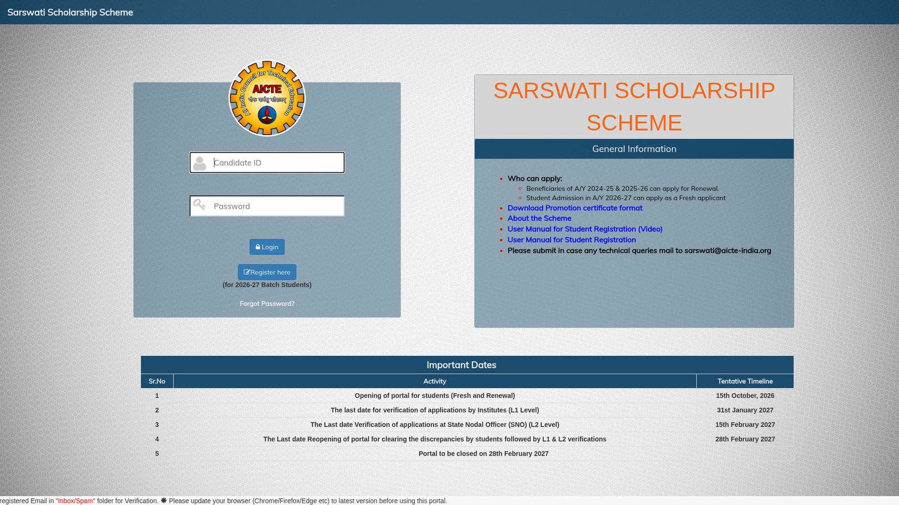
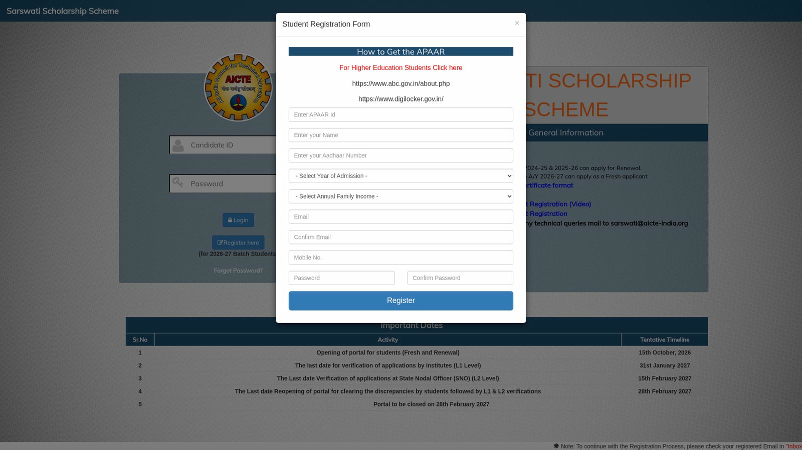

AICTE Saraswati Scholarship 2026-27: Rs 25,000 a year for girls in BBA, BCA and BMS
AICTE's Saraswati Scholarship Scheme pays Rs 25,000 a year, for up to three years, to girl students in the first year of BBA, BCA or BMS degrees at AICTE-approved institutions. The application portal for the 2026-27 batch opened on 15 October 2026 at sarswati.aicte.gov.in. There are 3,110 scholarships a year, distributed state-wise, and selection is by 12th-standard marks.

Official AICTE logo hosted on the scheme portal. Official source. Independent guide, not affiliated or sponsored. Logo and trademarks belong to AICTE.
Who can apply?
From the official scheme guidelines:
- Girl students admitted to the first year of a BBA, BCA or BMS degree at an AICTE-approved institution.
- Family income from all sources not more than Rs 8 lakh a year; a valid income certificate issued by the State or UT government must be enclosed.
- A maximum of two girl children per family can get the scholarship.
- The gap between passing the qualifying examination and admission to the degree course should not be more than two years.
- Aadhaar is mandatory; applications without the candidate's Aadhaar number are not accepted.
For the 2026-27 cycle the portal states: students admitted in academic year 2026-27 apply as fresh applicants, and beneficiaries of A/Y 2024-25 and 2025-26 apply for renewal.
Amount and number of scholarships
- Rs 25,000 a year for every year of study, up to three years (up to Rs 75,000 in total), towards college fee, computer, stationery, books, equipment and software. No separate grant for hostel or medical charges, and no receipts are needed for how the money is used.
- 3,110 scholarships a year, distributed state and UT wise between BBA/BMS (1,550) and BCA (1,560). States with a calculated share under 10 still get a minimum of 10.
- Kerala's allocation is 135 scholarships: 77 for BBA/BMS and 58 for BCA.
- Payment is by Direct Benefit Transfer to the student's bank account, once a year, after selection.
How selection works
Selection is on the merit of the qualifying examination only: the percentage of marks in 10+2 or equivalent. State and UT wise merit lists are prepared up to each state's seat count. Ties are broken by 10th-standard percentage, then by age (older candidate ranks higher). Reservation applies as per Government of India norms; a reserved-category student who qualifies in the general merit list is counted under the general category.
Dates on the official portal
The portal's "Important Dates" table for the 2026-27 batch, checked 21 October 2026:
- Portal opened for students (fresh and renewal): 15 October 2026.
- Last date for verification of applications by institutes (L1 level): 31 January 2027.
- Last date for verification at State Nodal Officer (L2 level): 15 February 2027.
- Portal reopens for clearing discrepancies by students, followed by L1 and L2 verification, until: 28 February 2027.
- Portal closes: 28 February 2027.
The table does not publish a separate last date for student submission. Since your institute must verify your application by 31 January 2027, treat that as the working limit and apply well before it. Dates are marked "tentative" on the portal; recheck the table before you apply.
How to apply: step by step
From the official user manual on the portal, checked on the live site on 21 October 2026.
- Open the official portal: sarswati.aicte.gov.in/login.php and click Register here (marked for 2026-27 batch students).
- In the registration form enter your APAAR ID (the form links to abc.gov.in and DigiLocker for how to get one), your name, Aadhaar number, year of admission, annual family income, email, mobile number and a password, then click Register.
- Check your registered email inbox or spam folder for the verification message; login credentials are sent to the registered email. Verify the email, then log in with your Candidate ID and password.
- Fill Personal Details and click Save and Next.
- Fill Family & Income Details and click Save and Next.
- In Institute Details, enter your date of admission, use the popup link to search and select your AICTE-approved institute, then enter principal details and fee information. Save and Next.
- In Education Details, enter your Higher Secondary (10+2)/Diploma details, then your 10th details. Save and Next.
- Enter your savings bank account details (this is where DBT payment goes). Save and Next.
- Upload documents: choose each attachment type from the dropdown, download the format where one is given, choose the file and upload.
- Review everything before final submit: the guidelines warn that incomplete applications are summarily rejected, and only institute-verified online applications are considered.


Steps 3 to 10 happen inside the student's login, so they are not shown as screenshots.
Video guides
We searched YouTube on 21 October 2026 for a step-by-step application video for the AICTE Saraswati Scholarship 2026-27 in English and in Malayalam. We could not verify one that covers this scheme and this cycle, so we are not linking any rather than risk outdated or unrelated instructions. The portal itself hosts AICTE's own user-manual video and a PDF manual for student registration - use those first.
Renewal rules
Beneficiaries of A/Y 2024-25 and 2025-26 renew through the same portal by uploading a Promotion Certificate on the institution's letterhead, certified by the head of the institution. The format is downloadable from the portal. A student who fails to get promoted to the next year forfeits the scholarship.
Frequently asked questions
Is this the same as Pragati?
No. Pragati is AICTE's scholarship for girls in technical degree and diploma courses like BTech. Saraswati is specifically for girls in BBA, BCA and BMS at AICTE-approved institutions.
Is there a merit or entrance test?
No test. Selection is purely by 10+2 marks, state-wise, up to the seat count.
Can I hold another scholarship with it?
No. Receiving any other scholarship, stipend, salary or financial assistance during the course means refunding the Saraswati amount to AICTE.
Is there a student last date?
The portal's timeline does not publish one. Institute verification ends 31 January 2027 and the portal closes 28 February 2027; apply well before your institute's verification deadline.
Did AiCoN apply?
No. This is a researched guide, not a completed application or verified selection.
Sources: Official Sarswati Scholarship portal and timeline · Scheme guidelines (official PDF) · Student registration manual (official PDF) · AICTE students development schemes. Checked 21 October 2026.